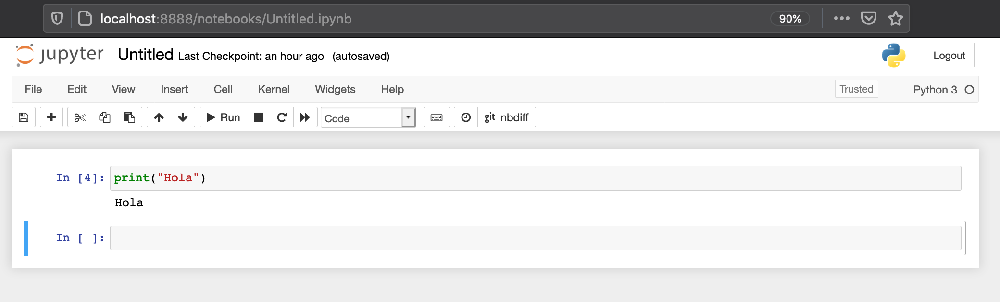

Architecture¶
Jupyter Notebooks work with what is called a two-process model based on a kernel-client infrastructure. This model applies a similar concept to the Read-Evaluate-Print Loop (REPL) programming environment that takes a single user’s inputs, evaluates them, and returns the result to the user.
Based on the two-process model concept, we can explain the main components of Jupyter in the following way:

Jupyter Client¶
It allows a user to send code to the kernel in a form of a Qt Console or a browser via notebook documents.
From a REPL perspective, the client does the read and print operations.
Notebooks are hosted by a Jupyter web server which uses Tornado to serve HTTP requests.
Running Code

Execution


Jupyter Kernel¶
It receives the code sent by the client, executes it, and returns the results back to the client for display. A kernel process can have multiple clients communicating with it which is why this model is also referred as the decoupled two-process model.
From a REPL perspective, the kernel does the evaluate operation.
kernel and clients communicate via an interactive computing protocol based on an asynchronous messaging library named ZeroMQ (low-level transport layer) and WebSockets (TCP-based)
Makes Jupyter a language agnostic application (Julia, Python, R, etc.)
A kernel identifies itself to IPython by creating a directory, the name of which is used as an identifier for the kernel. These may be created in a number of locations:

Mine is in the following location (MAC) ~/Library/Jupyter/kernels/python37664bite09a6f3cbf7b46ec803618408bcaece5, and you find similar files:
kernel.json logo-32x32.png logo-64x64.png
Sample of a default Python kernel json file:
{
"argv": [
"/usr/local/opt/python/bin/python3.7",
"-m",
"ipykernel_launcher",
"-f",
"{connection_file}"
],
"display_name": "Python 3.7.6 64-bit",
"language": "python",
"env": {},
"metadata": {
"interpreter": {
"architecture": 3,
"path": "/usr/local/opt/python/bin/python3.7",
"version": {
"options": {
"loose": false,
"includePrerelease": false
},
"loose": false,
"raw": "3.7.6-final",
"major": 3,
"minor": 7,
"patch": 6,
"prerelease": [
"final"
],
"build": [],
"version": "3.7.6-final"
},
"sysPrefix": "/usr/local/Cellar/python/3.7.6_1/Frameworks/Python.framework/Versions/3.7",
"fileHash": "1eaf1f22773a15c8adb7d37641dd5c88999c181add7c1d97a004dd33a2c824657b1b4cfb6ca19d4b7804b18eb454d5c34b3df1bdc53c2c93f4116419ce72d1a8",
"type": "Unknown",
"displayName": "Python 3.7.6 64-bit",
"__store": true
}
}
}%
You can build your own. I built mine to run PySpark through my Jupyter Notebook as shown below:
{
"display_name": "PySpark_Python3",
"language": "python",
"argv": [
"/opt/conda/bin/python3",
"-m",
"ipykernel_launcher",
"-f",
"{connection_file}"
],
"env": {
"SPARK_HOME": "/opt/jupyter/spark/",
"PYTHONPATH": "/opt/jupyter/spark/python/:/opt/jupyter/spark/python/lib/py4j-0.10.9-src.zip:/opt/jupyter/spark/graphframes.zip",
"PYSPARK_PYTHON": "/opt/conda/bin/python3"
}
}
Jupyter Notebook Document Format¶
Notebooks are automatically saved and stored on disk in the open source JavaScript Object Notation (JSON) format and with a
.ipynbextension.